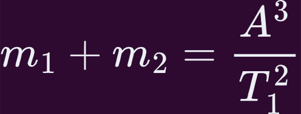

Среди звезд, которые видны на небе рядом, различают оптические двойные и физические двойные звезды. В первом случае такие две звезды хотя и видны вблизи, но находятся в пространстве далеко друг от друга. Если же в результате наблюдений выясняется, что они образуют единую систему и обращаются вокруг общего центра масс под действием взаимного тяготения, то их называют физическими двойными звездами. Когда число звезд в системе, связанной взаимным тяготением, оказывается более двух, то их называют кратными. В настоящее время считается, что большинство звезд (более 70%) образуют системы большей или меньшей кратности. В зависимости от того, каким способом можно обнаружить двойственность звезды, их называют по-разному. Если она заметна при непосредственных наблюдениях в телескоп, то визуально-двойной. Если же об этом можно судить только по спектру, то спектрально-двойной.
Первым, кто доказал, что такие звезды действительно существуют, был известный английский астроном Вильям Гершель (1738—1822). Множество двойных звезд открыл и исследовал В. Я. Струве. В настоящее время известно уже более 70 тыс. этих объектов.
Физические двойные звёзды, в зависимости от способа их наблюдения, принято делить на несколько классов.
Визуально-двойные
Визуально-двойные звёзды — это двойные звёзды, компоненты которых можно увидеть раздельно (в телескоп или сфотографировать). Возможность наблюдать звезду как визуально-двойную определяется разрешающей способностью телескопа. Поэтому все известные визуально-двойные звёзды расположены в окрестностях Солнца с очень большим периодом обращения (вплоть до нескольких тысяч лет). А их орбиты сравнимы по размерам с орбитами планет-гигантов нашей Солнечной системы. В связи с этим, из свыше 110 000 таких объектов менее чем у сотни орбиты определены с большой точностью.
Затменно-двойные
Второй класс двойных систем составляют затменно-двойные или затменно-переменные звёзды. Они представляют собой тесные пары, обращающиеся с периодом от нескольких часов до нескольких суток по орбитам, большая полуось которых сравнима с самими звёздами. Это приводит к тому, что угловое расстояние между звёздами очень мало. Поэтому мы не можем увидеть компоненты системы по-отдельности. Однако судить о том, что система действительно является двойственной, можно по периодическим колебаниям её блеска. Предположим, что плоскости орбит звёзд по лучу зрения практически совпадают. Тогда при обращении звёздной пары, когда один из компонентов оказывается впереди или сзади другого, наблюдаются затмения. Разность звёздных величин в минимуме и максимуме блеска называется амплитудой. А промежуток времени между двумя последовательными наименьшими минимумами — периодом переменности.
Спектрально-двойные
Следующий класс представляют спектрально-двойные звёзды. Это такие звёзды, двойственность которых устанавливается лишь на основании спектральных наблюдений. Представьте, у нас есть две звезды: одна массивная и яркая А, вторая — менее яркая и массивная В. Обе они обращаются вокруг общего центра масс системы, то приближается к наблюдателю, то удаляется от него. Вследствие эффекта Доплера в первом случае линии в спектре звезды будут смещаться в фиолетовую область спектра, а во втором — в красную. Причём период этих смещений будет равен периоду обращения звёзд.
Астрометрически-двойные
И последний класс двойственных систем представляют астрометрически-двойные звёзды. Они представляют собой очень тесные звёздные пары, в которых одна из звёзд или очень мала по размерам, или имеет низкую светимость. Двойственность такой звезды можно обнаружить лишь по отклонениям яркой компоненты от прямолинейной траектории то в одну, то в другую сторону. Вычисления показали, что такие возмущения пропорциональны массе спутника.
Оказалось, что относительное видимое движение компонентов совершается по эллипсу и удовлетворяет закону площадей. Следовательно, в двойных системах обращения звёзд вокруг общего центра масс происходят в соответствии с законами Кеплера и подчиняются закону всемирного тяготения Ньютона. Из этого следует, что при известном расстоянии до этих систем использование третьего обобщённого закона Кеплера позволяет определить их массу. Для этого достаточно сравнить движение спутника звезды с движением Земли вокруг Солнца.
T2 - период обращения земли вокруг солнца
A - большая полуось орбит двух звёзд
a - большая полуось земной орбиты
M1,M2 - массы земли и солнца
m1,m2 - массы звёзд
Приняв массу Солнца равной единице большую полуось земной орбиты равной одной астрономической единице и пренебрегая массой Земли по сравнению с массой Солнца, получим соотношение, по которому можно определить суммарную массу двойной системы, выраженную в массах Солнца [M☉]:
Если же необходимо вычислить массу каждого компонента звёздной пары, то надо изучить движение каждой из них и вычислить их расстояния от общего центра масс. Тогда отношение масс компонентов звёздной пары будет обратно пропорционально отношению больших полуосей их орбит:
m1 = M☉
m2 = M☉
A = а.е.